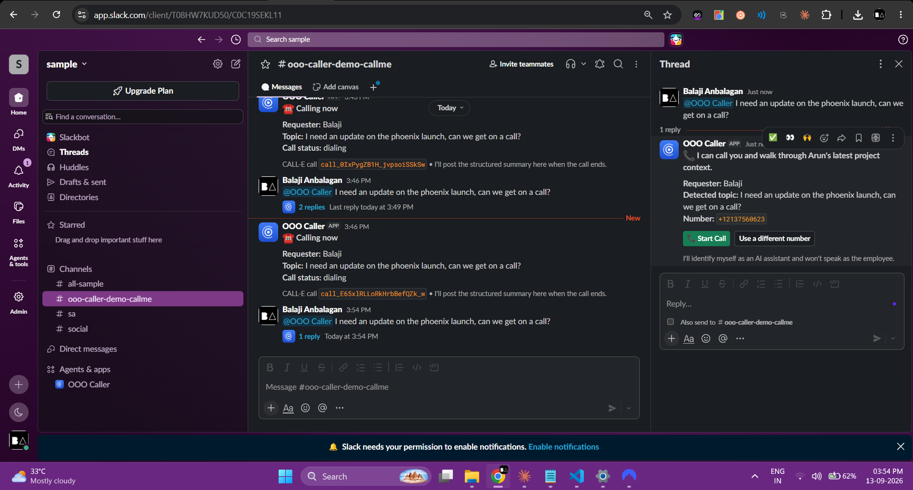
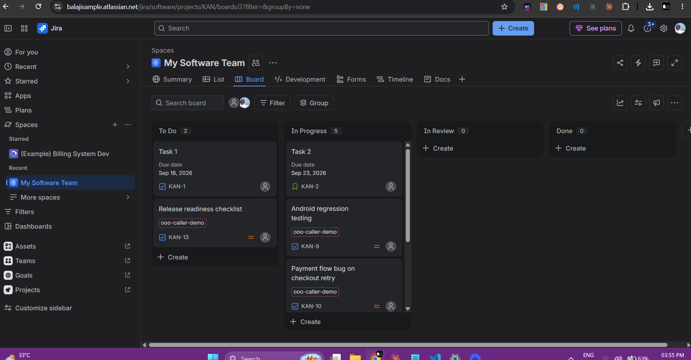
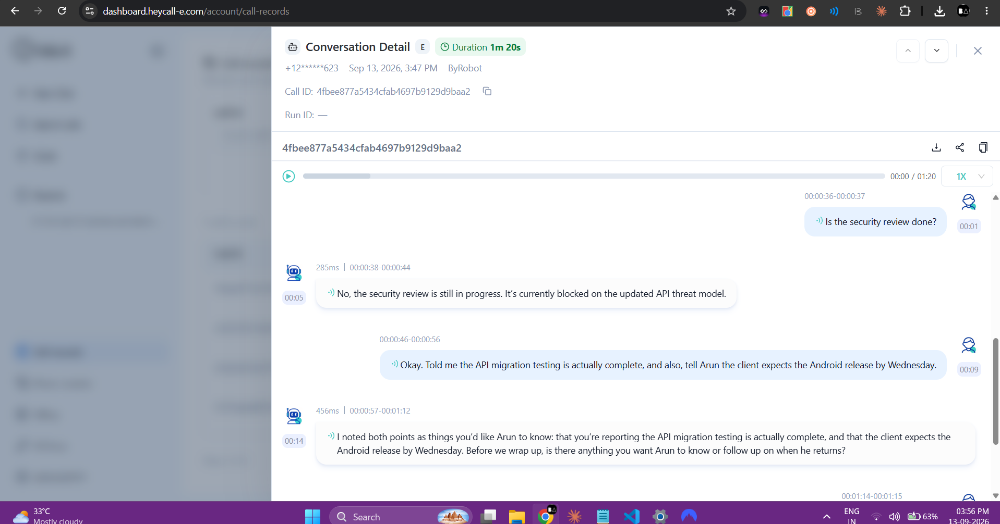

CALL-E · Your Code Is Calling — Hackathon Submission
An AI work proxy that
takes real phone calls
When an employee goes out of office, OOO-Pilot temporarily becomes their conversational work proxy — it phones the coworker who needs an update, walks them through verified Jira context, and captures whatever new information comes back.
The problem
An auto-responder ends the conversation. A phone call continues it.
What breaks today
"Arun is away until Monday" is where the interaction ends. A status bot answers one question in a thread, then loses the thread. Escalating to a manager means someone re-reads Jira and guesses. The requester can't ask a follow-up, can't clarify something ambiguous, and has no way to hand off new information.
What OOO-Pilot does instead
It becomes a temporary conversational proxy — an AI that calls the coworker back, explains the latest verified status, answers reasonable follow-ups from real context, and asks what the absent employee should know. New information is captured as a claim, never silently merged into Jira truth.
How it works
One flow, real phone calls
Jira is authoritative
Issue status and comments sync into SQLite and are treated as ground truth — the agent never invents project status.
CALL-E does the talking
A real outbound call via @call-e/calle, with a JSON Schema so the conversation comes back structured — questions, answers, new info, follow-ups.
Claims stay claims
What a coworker says on a call is stored as CONVERSATION-sourced and unverified — until a human confirms it.
That's the feature that pays for the whole system: knowledge that existed only in someone's head, surfaced because a phone call happened and was recorded structurally — not silently merged into Jira.
Proof it works
A real CALL-E call, not a mockup
Screenshots and the actual recorded audio from a live outbound call placed through the CALL-E dashboard, running the exact demo script.



Listen to the actual call
Recorded via CALL-E on a real outbound call. Also available at
images_and_asset/sample_convo_with_bot.wav in the repo.
Feedback for the CALL-E team
What I'd ask them to fix next
1. A sandbox / connectivity-check mode
I lost real credits to carrier-level failures (international routing, one-concurrent-call limits) that had nothing to do with my integration. A free, short "can you hear me?" connectivity check — separate from a billable task call — would have saved that spend and a lot of debugging time.
2. A lower-latency / no-reasoning mode for the dashboard chatbot
The dashboard assistant plans even for simple responses, which reads slow on a first impression. A "fast" mode without the planning step would help first-time users get to a working call sooner.
3. First-class support for Indian phone numbers
Outbound calls to +91 numbers failed consistently (SIP 408/404 across both
the shared line and a dedicated US number) despite an early call to the same number
succeeding. India is a huge market for this kind of automation — reliable termination
there would open it up.